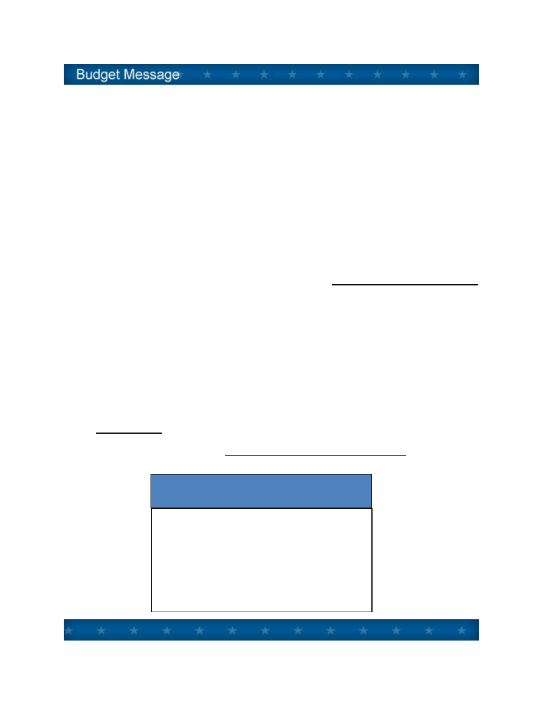
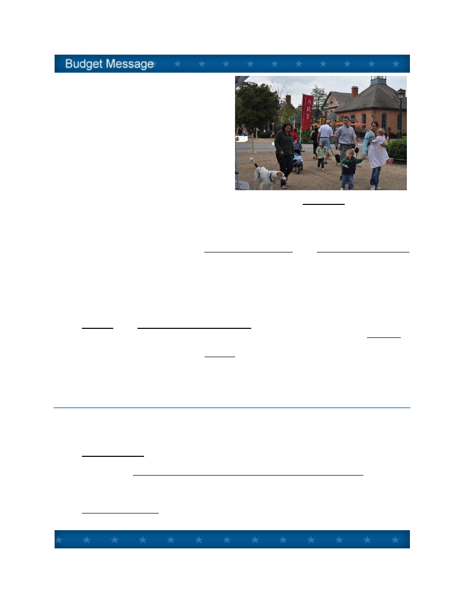

TO:
Mayor and City Council
DATE:
April 1, 2013
SUBJECT:
City Manager’s Budget Message
INTRODUCTION
In fiscal year 2009 the City’s general fund operating budget exceeded $34 million. In fiscal 2014,
five years later, the city will continue to operate below that level.
Fiscal Year 2014, with one notable exception, should be a positive year for Williamsburg’s general
fund financial outlook compared to Fiscal Year 2013. Positive trends include:
• Property tax revenue should finally turn the corner and increase by 2.8%, even taking into
account the recently announced transfer of the Hospitality House to tax exempt status.
• Intergovernmental revenue should be up significantly, by 10.5%, primarily due to higher state
sales tax for education and VDOT street maintenance payments.
General Fund Operating History and Projections

• All other tax and fee revenue when taken together as a whole should just barely land in
positive territory.
• General fund expenditures, for all purposes except public education, are projected to be
held to an increase of 1.1%.
The one big exception to the overall modestly positive financial trend in fiscal 2014 will be the cost of
the city contribution to the Williamsburg/James City County School System. A contribution of
$8,368,814 will be required, an 8.1% increase in city school costs, based on full funding of the
Superintendent’s proposed school budget, according to the funding formula set forth in the current
Joint School Agreement with James City County.
In just two years’ time the city’s spending for schools will have increased by over one million dollars,
coming at a particularly difficult time while the city tries to rebound from the Great Recession. Since
fiscal 2012 the portion of the city’s general fund budget devoted to public education will have
increased from 23.5% to 25.2% of the total.
Looking at the overall picture for the year ahead, the Proposed General Fund Operating Budget
can be summarized by:
• Projected Revenues of $33,176,575, up by 3.2%.
• Planned Spending of $33,285,206, up by 2.8%.
• Reserves brought forward of $108,631 to fund in part appropriated contingencies.
• No recommended increases in tax rates or fees for service.
• Full time equivalent authorized positions of 188, an increase of five due to incorporation of
WRHA employees; reduced from 202 in FY 2009.
In the Utility Budget, $6,318,040 in operating revenues are projected, an 0.9% increase.
Recommended is a 5.5% Water and Sewer rate increase, from $4.55 to $4.80 per one thousand
gallons, beginning July 2013, per the Five Year Water and Sewer Rate Analysis. Comparing our
water and sewer rates regionally:
Newport News
$ 8.47
Portsmouth
$ 8.47
JCSA Residential
$ 6.07
JCSA Commercial
$ 6.67
Norfolk
$10.08
Chesapeake
$10.90
Virginia Beach
$ 8.10
Williamsburg
$ 4.55
Water and Sewer Rates (FY13)
Per 1000 gallons
A - 2

In the General Fund Capital Improvement Program, a total of $8,082,130 is projected in new
capital spending, plus $836,177 in debt service payments, for a total of $8,918,307. (See Capital
Improvements Section E)
The combined total of the four funds – General Operating Fund, Utility Fund, Sales Tax/Capital
Fund and the Public Assistance Fund – amounts to $51,587,832.
With the above as an overview, the remainder of the Budget Message discusses issues particularly
helpful in understanding and reviewing the proposed budget, beginning with General Fund revenue
projections.
REVENUE PROJECTIONS
Next year (FY 2014) we forecast General Fund operating revenues of $33,176,575, a 3.2% increase
from the current year (FY 2013) budget amount. Looking at four broad categories:
Share of
Budget
FY 2013
Adopted
FY 2014
Proposed
Change
All Property Taxes
38%
$ 12,304,600
$12,652,720
2.8%
Other Local Taxes
43%
$ 14,276,600
$14,211,000
(0.5%)
Fees, Charges,
Miscellaneous
9%
$ 2,670,759
$3,115,968
16.7%
Intergovernmental
10%
$ 2,893,561
$3,196,887
10.5%
In the Budget Guide (Section F) are detailed explanations of revenues, explaining the legal basis
and ten year trends of all revenue sources. The following is a summary of significant revenue
changes in next year’s budget under the four categories:
1.
Real Estate Taxes. Property tax projections are based on a total anticipated value of real
estate of $1.694 billion, an increase from current land book values of 4.0% (3.6% residential,
4.9% commercial), reflecting a long awaited reversal in the residential real estate market.
Most of the gain in commercial valuation is the result of new construction (mostly Riverside
Hospital) net of the loss of the Hospitality House as taxable property due to purchase by the
College of William and Mary.
Each additional one penny on the tax rate should generate an estimated $169,000. The
Proposed Budget recommends continuing the tax rate of $.57 per hundred dollars of
assessed value yielding revenue of $9,600,000.
A - 3

2.
Personal Property Taxes. Better known as the “car tax,” the personal property tax rate is
currently $3.50 per 100 of value (offset by tax relief from the state). City Council declined
last year to increase this tax to $4.00
matching the rate in York and James City
Counties, as recommended, in order to
help close the budget gap.
3.
Other Local Taxes. Other local sources
of taxation include various consumer utility
taxes and franchise fees, business
licenses, transient lodging and prepared
food or "room and meal" taxes. Taken
together, other local taxes will generate
$14,211,000, a 0.5% decrease from the
current year budget amounts.
The estimate for room and meal tax collections totals $3,300,000 for room tax, 4.4% less
than last year’s estimate; and $6,372,000 for meal tax, a 0.4% increase, from last year’s
adopted budget. These estimates remain below 2008 levels, reflecting continued weakness
in the tourism sector, and an overly ambitious estimate for room tax last year. The room tax
estimate does not include the $2.00 destination marketing surcharge for additional tourism
promotion, which is a separate line item in the budget of $1.3 million.
Taken together, all local sources of taxation, property and other local taxes, are expected to
generate $26,863,720, a 1.1% increase from the current year budget.
4.
User Fees, Charges, and Miscellaneous. This broad category of locally generated
revenue is expected to generate $3,115,968, a significant increase of 16.7% from the
current year. This increase is largely attributable to increasing Prince George Parking
Garage income, and transferring rents from the Williamsburg Redevelopment and Housing
Authority’s (WRHA) Triangle Building to the City’s operating budget. Also included is a yet
undefined $250,000 “Emergency Services Agreement” to account for the sudden loss of tax
and fee revenue from the Hospitality House sale.
5.
Intergovernmental - Revenue from the Commonwealth. Revenues from the state
government in the amount of $3,196,887, which includes support for constitutional officers
and various categorical grants, are estimated to increase by 10.5%, based on the state’s FY
14 budget. This is a welcome reversal of declines in intergovernmental revenue in recent
years.
The estimate of Sales Tax for Education of $985,974, based on State Department of
Education calculations, is up by 27.6% due to increasing school census and growth in state
sales tax receipts.
We also expect a $30,000 increase in VDOT street maintenance payments to the city.
A - 4

EXPENDITURE ISSUES
Next year we have proposed General Fund operating expenditures of $33,285,206, an
increase of 2.8% from the current year adopted budget. Broken down in four large
categories:
Share of
Budget
FY 2013
Adopted
FY 2014
Proposed
Change
City Departments
53%
$17,299,278
$17,573,240
1.6%
Constitutional Officers
and Judicial
7%
$ 2,194,048
$ 2,140,517
(2.4%)
Education and Library
27%
$ 8,575,636
$9,201,162
7.3%
Outside Agencies
13%
$ 4,308,335
$4,370,287
1.41%
Details on operating expenditures can be found under Budget Summaries (Section D). Highlights
of significant expenditure issues are divided between “City Operational Issues” and “Outside Agency
Issues.”
CITY OPERATIONAL ISSUES
1. Staffing. The total number of full time equivalent (FTE) positions authorized in city departments
decreased from 202 in FY 09 to 183 in FY 13. The reduction has been accomplished through
transfer and reorganization (including the 13
positions transferred to York County as part of the
E911 consolidation), job consolidations, and
reductions in force. Next year we are bringing
five WRHA positions on to the city payroll (four
positions in Human Services department for
public housing support, and one position in the
Economic Development department. These
changes will result in an FTE of 188 in FY 14.
2. Salary Ranges and Pay. A 2% allowance for merit pay increases has been included in the
proposed budget, to be coupled with a 2% increase in pay ranges. The pay range increase will
compensate in part for the 2.1% increase in the CPI for calendar 2012. This allowance will be
apportioned to employees based on performance as indicated by annual performance evaluations,
and by the relative position of the incumbent in their pay range as prescribed in the Personnel
A - 5

Williamsburg Mayor Clyde Haulman reading to
Matthew Whaley students
Manual. In addition, a compensation allowance equal to .9 percent of pay and benefits has been
included to make market adjustments for targeted compression and market issues.
3. Health Coverage. Last year the city changed the health care insurance coverage to Anthem’s
“Local Choice” product in order to control costs. The city received its Local Choice renewal notice
calling for a 4.9% increase. It is recommended that this increase be apportioned equally between
the city and the employees, so the budget reflects a 4.9% increase in the city’s health care cost.
4. Virginia Retirement System. The contribution level set by VRS for Williamsburg in fiscal 2013
increased from 16.44% to 21.29% of payroll as a result of the latest biennial actuarial valuation. The
21.29% rate (16.29% city share, 5.0% employee share) remains constant in the fiscal 2014 budget.
OUTSIDE AGENCY ISSUES
Nearly one-half of the city's General Fund budget goes to agencies and activities not under City
Council's direct operational control. Funding relationships are often complex, and vary in degrees of
funding discretion possible from year to year. The "Notes on Funding Relationship," contained in
the Budget Summaries and the Budget Guide (Sections D and F), help explain the city's role in
providing financial support to these agencies and activities.
Background documentation from outside agencies is provided in the Appendix of the Proposed
Budget, or provided under separate cover or electronically, as in the case of the School and the
Library budgets.
A number of issues concerning outside agency funding requests for the coming year need to be
highlighted:
1.
Schools. Based on 1) the Superintendent’s proposed
budget, 2) current expectations of State and Federal
funding, and, 3) the current five-year Joint School
Agreement with James City County with its three year
enrollment averaging formula; we expect a city
contribution to the schools in the amount of
$8,368,814, 8.1% increase from the current year. Over
the past two years, since FY 2012, the city’s increase in
education funding is $1,043,336, for a 14.2% jump in
cost to city taxpayers. With this increase, next year the
city’s share of school cost will be 9.54%, compared to
90.46% for the county. Further, I expect FY15 will likely
result in another large increase in city school costs.
The city’s school population, for purposes of
apportioning cost between the city and the county as
determined by September 30, 2012 enrollment, is 902, or 8.55% of the total.
A - 6

2.
Library. The Williamsburg Regional Library is funded under the revised library agreement
with James City County, effective July 1, 2006. (A new agreement is under review but will
not drive the FY 2014 budget.) The existing agreement calls for funding of operational costs
based on the proportion of circulation by residency. Based on the library’s figures, the
city/county circulation ratio to be applied in FY 14 is 15.9% city, and 84.1% county. The
Library’s proposed budget of $6,141,967 is an increase of 3.8%, which will result in a city
contribution of $819,506, level with the current year.
3.
Regional Jail. Funding the city’s share of the Virginia Peninsula Regional Jail is expected
to be $1,204,372, a 4.6% decrease from the current budget. The city share of jail costs is
based on the average usage rate over the past five years. Each member jurisdiction
(Williamsburg, James City County, York and Poquoson) pays for their share of the inmate
population, based on location where the offense occurred and the arresting authority. We
expect to pay 18.5% of local jail costs this coming year.
4.
Health Services. The three agencies named below provide health services to city
residents, workers and visitors. The total recommended funding for FY 14 is $434,576, an
increase of 1.6%:
The Peninsula Health District budget request to the city is $100,741, a 2.4% increase from
the current year, based on a complex use-based formula.
The Human Services Advisory Board has recommended Olde Towne Medical Center
(Williamsburg Area Medical Assistance Corporation or WAMAC) receive funding of $83,430,
the same as the current year.
Finally, Colonial Behavioral Health, the agency through which the city provides mental health
and retardation services to its residents, has requested a city contribution of $250,405,
which is a 1.85% over the amount the city provided in the current year.
Human Service Agencies. The city's Human Services Advisory Board, as requested by
City Council, has evaluated Human Services Agency requests for funding, and made its
recommendations to City Council. Their analysis and recommendations are in the Appendix
to the Proposed Budget. Proposed for next year is $74,444, an decrease of 15.6% due to
moving Child Development Resources (CDR) city funding from a grant basis to a fee for
service basis.
5.
Community and Economic Development Agencies.
Tourism Promotion
The city has supported tourism advertising and promotion through Colonial Williamsburg as
our premier “destination driver,” and the Greater Williamsburg Chamber and Tourism
Alliance as our regional “destination marketing organization.”
This year Colonial Williamsburg Foundation has requested level funding of $1,300,000. The
Greater Williamsburg Chamber and Tourism Alliance, in its expanded role for destination
marketing in cooperation with the Williamsburg Area Destination and Marketing Committee
A - 7

(WADMC), has requested level funding
of $650,000. Despite the city’s
continuing budget challenges, funding
for tourism promotion is necessary to
grow the economic base for future city
budgets.
The proposed budget also includes an
estimated $1,300,000 of pass through
funding from the $2.00 room surcharge
to the coordinated Tourism Alliance and
Williamsburg Area Destination Marketing
Committees
annual promotional
campaign. The total city tax dollars for tourism promotion is $3,250,000.
Economic and Community Development
In addition to tourism promotion, the city support is recommended for a number of other
agencies that make important economic development and community development
contributions to Williamsburg. These are listed in the Budget Summary section. New this
year is a proposed contribution of $16,700 to This Century Art Gallery (TCAG) for the
purpose of defraying the parking and landscaping fees due to the city as a result of TCAG’s
purchase of property in the Municipal Center for the purpose of constructing a new art
gallery. Also city sponsorship for the Kingsmill Championship (LPGA) at $15,000 is
recommended to support this important regional tourism event.
6.
Cultural. The Williamsburg Arts Commission has again performed the task of receiving,
evaluating, and recommending funding for the arts. Their report is copied in the Appendix to
the Proposed Budget. They recommend local (Williamsburg, James City County, and state
challenge grant) arts funding of $120,000. Of this amount, the city contribution would be
$55,000, level with current year. Also recommended is continued support of the Virginia Arts
Festival at $50,000; and the Virginia Symphony Lake Matoaka concert at $6,000.
THE BUDGET AS A POLICY DOCUMENT
Before concluding this overview of the proposed budget, here is an introduction to important
elements of public policy and managerial information contained in it:
A. Budget Message providing management’s introduction to the budget.
B. City Council’s Goals, Initiatives and Outcomes for the 2013 and 2014 Biennium. Adopted by
City Council in November 2012, the “GIOs” set the strategic direction of the city to guide the
annual budget process and to assess the performance of city government.
C. Performance Metrics detailed by departments and cost centers.
A - 8

D. Budget Summaries provide precise budget information from the general to the specific, for
all funds.
E. Capital Improvement Program contains recommended capital appropriations in FY 2014,
and the next four years of capital projections for planning purposes.
F. Budget Guide contains background information helpful to understanding the complexities of
a municipal budget in Virginia.
NEXT STEPS
The budget process now moves from the staff level, formation phase, to the Council and public
level, adoption phase.
City Council received outside agency proposals at the first Budget Work Session held on Monday,
March 25. The school budget will be reviewed at the Monday, April 8 City Council work session.
The formal budget hearing will be advertised for the April 11 City Council meeting. A second Budget
Work Session is scheduled for Monday, April 29. Adoption is scheduled for the May 9 Council
meeting.
Jackson C. Tuttle
City Manager
A - 9
Document Outline